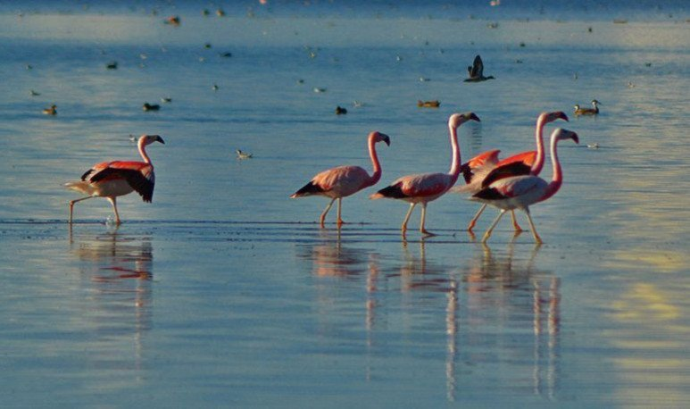

Se encuentra entre las localidades de Rinconada, Lagunillas, Yoscaba, Cieneguillas y Pozuelos. Protege la laguna de los Pozuelos junto a su avifauna acuática, compuesta por especies exclusivas del ambiente de la Puna. Por su relevancia como hábitat para numerosas aves acuáticas en 1990 fue incluida en la lista de humedales de importancia internacional como primera reserva de biosfera de Argentina.1 El 4 de mayo de 1992 se la incluyó en la lista de Humedales de Importancia Internacional o Sitio Ramsar.2 Fue designado como Sitio de Importancia Internacional de la Red Hemisférica de Reservas de Aves Playeras (RHRAP) en mayo de 2014.3 Para la legislación argentina un monumento natural es un área, cosa, especies vivas de animales o plantas, de interés estético, valor histórico o científico, a los cuales se les acuerda protección absoluta. El monumento natural se encuentra en un extenso altiplano entre los 3400 a 3800 msnm. Estas planicies o bolsones, separadas por cordones montañosos paralelos de norte a sur, carecen de escurrimiento al mar. Así, el agua de las escasas lluvias o nevadas, se acumula en las depresiones centrales del bolsón, formando lagunas extensas y poco profundas. Tal es el caso de la laguna de los Pozuelos. Tiene 25 km de largo y 9 km de ancho. La extrema aridez del ambiente y los suelos pobres condicionan el desarrollo del bioma. Por ello ciertas especies presentan adaptaciones particulares a estos ambientes, convirtiéndose así en propias de una región. No es casual, que en la Puna se hallen numerosas especies endémicas, diferentes a las presentes en otras regiones del país.
Árido de altura, con oscilaciones térmicas de carácter extremo (hasta 43,5 °C en un día); temperaturas medias: 8 °C en invierno (con mínimas de hasta -30 °C bajo cero) y 16 °C en verano (con máximas superiores a 30 °C ); hasta 200 mm anuales de lluvia, concentrados en la época estival; fuertes heladas y nevadas esporádicas en los meses más fríos. La temporada más recomendada para su visita es en marzo y abril, terminada la época de lluvias, cuando miles de flamencos pintan de rosa la laguna; las precipitaciones veraniegas -escasas aunque intensas- suelen cortar los caminos de acceso.
El principal problema de la laguna es el proceso de relleno, por la gran cantidad de sedimentos que recibe de los ríos de la cuenca montañosa. Como la laguna de los Pozuelos se encuentra en una gran cuenca cerrada, sin salida al mar, el producto de la acción erosiva de los ríos y del viento se deposita en la laguna, que va colmatándose. Vale destacar que la presencia en la zona de gran cantidad de ganado doméstico, en especial ovejas, lleva al sobrepastoreo de la vegetación. El deterioro de la misma ocasionó la desprotección del suelo, expuesto a la erosión hídrica y eólica. En cambio, el de las llamas, también componente del ganado doméstico de la zona, no ocasionan procesos erosivos ni deterioran el suelo. Esto se debe principalmente a su modo de alimentación (cortan y no arrancan de raíz como las ovejas y caballos) y a sus pezuñas provistas de almohadillas que no horadan ni disgregan el suelo, a diferencia de ovejas. Algunos pobladores recolectan para su alimentación, los huevos de las aves acuáticas que viven en la laguna. Aunque esto no se produce a gran escala ni muy frecuentemente, significa un alto impacto para las poblaciones de aves locales que, además de ser escasas, ven afectado su ciclo reproductivo, que se produce solamente una vez al año. No posee yacimientos arqueológicos o paleontológicos.